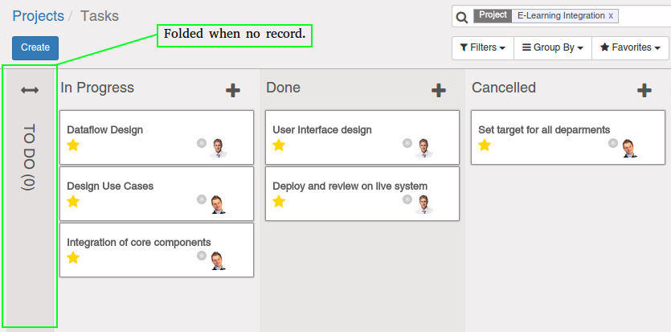

<section class="oe_container">
    <div class="oe_row oe_spaced">
        <h2 class="oe_slogan">Fold Zero Record Kanban</h2>
        <h3 class="oe_slogan">Fold your kanban stage when have no record.</h3>
        <div class="oe_span6">
            <div class="oe_demo oe_picture oe_screenshot">
                    
            </div>
        </div>
        <div class="oe_span6">
            <p class='oe_mt32'>
This module will make kanban stage will automatically folded if no record when you visit the kanban view at the first time.
            </p>
        </div>
    </div>
</section>
